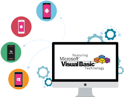
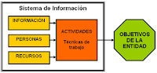

1.Análisis y Diseño de Sistemas
1.1.Ciclo de la vida de un sistema
1.1.1.Análisis
1.1.2.Diseño
1.1.3.Codificación
1.1.4.Elaboración de Manuales:
1.1.4.1.Elaboración de Manual técnico:
1.1.5.Implementación y Pruebas:
2.Procesos para la manipulación de Bases de datos Enlazada
2.1.Introducción a la Programación orientada a objetos
2.2.Manejo del Sftware Visual Basic 2010
2.3.Prácticas con diferentes objetos en Visual Basic (Botones, Imágenes, Listas, ComboBox, Timer, etc).
2.4.Uso de componentes de Krypton y agregar iconos a los formularios e imagenes a los objetos con iconarchive.com.
2.5.Enlazando Bases de datos por medio de Active Data Object de Visual Basic.
2.6.Instrucciones básicas de SQL.
3.El funcionamiento del sistema de información.
3.1.Procesos de altas de datos.
3.2.Procesos de bajas de datos.
3.3.Proceso para modificación de datos.
3.4.Proceso para consultas de datos
3.5.Procesos para la creación de informes de datos.
3.6.Realización de pruebas al sistema de información.
3.7.Validar el sistema de información.
3.8.La creación del sistema de información.
3.9.Diseño de Manuales(Técnico y del Usuario).
3.10.El empaquetamiento del sistema de información.
3.11.Instalación del sistema de información.
Aplicación 10,GHVV
1.Análisis y Diseño de Sistemas
1.1.Ciclo de la vida de un sistema:
Cualquier sistema de información va pasando por una serie de fases a lo largo de su vida. Su
ciclo de vida comprende una serie de etapas entre las que se encuentran las siguientes:
- Planificación
- Análisis
- Diseño
- Implementación
- Pruebas
- Instalación o despliegue
- Uso y mantenimiento
Estas etapas son un reflejo del proceso que se sigue a la hora de resolver cualquier tipo de
problema. Ya en 1945, mucho antes de que existiese la Ingeniería del Software, el matemático
George Polya describió este proceso en su libro How to solve it (el primero que describe la
utilización de técnicas heurísticas en la resolución de problemas). Básicamente, resolver un
problema requiere:
- Comprender el problema (análisis)
- Plantear una posible solución, considerando soluciones alternativas (diseño)
- Llevar a cabo la solución planteada (implementación)
- Comprobar que el resultado obtenido es correcto (pruebas)
Las etapas adicionales de planificación, instalación y mantenimiento que aparecen en el ciclo
de vida de un sistema de información son necesarias en el mundo real porque el desarrollo de
un sistema de información conlleva unos costes asociados (lo que se hace necesaria la
planificación) y se supone que, una vez construido el sistema de información, éste debería
poder utilizarse (si no, no tendría sentido haber invertido en su desarrollo).
Para cada una de las fases en que hemos descompuesto el ciclo de vida de un sistema de
información se han propuesto multitud de prácticas útiles, entendiendo por prácticas aquellos conceptos, principios, métodos y herramientas que facilitan la consecución de los objetivos de cada etapa.
1.1.1.Análisis
Lo primero que debemos hacer para construir un sistema de información es averiguar qué es
exactamente lo que tiene que hacer el sistema. La etapa de análisis en el ciclo de vida del
software corresponde al proceso mediante el cual se intenta descubrir qué es lo que realmente
se necesita y se llega a una comprensión adecuada de los requerimientos del sistema (las
características que el sistema debe poseer).
¿Por qué resulta esencial la etapa de análisis? Simplemente, porque si no sabemos con
precisión qué es lo que se necesita, ningún proceso de desarrollo nos permitirá obtenerlo.
El
problema es que, de primeras, puede que ni nuestro cliente sepa de primeras qué es
exactamente lo que necesita. Por tanto, deberemos ayudarle a averiguarlo con ayuda de
distintas técnicas (algunas de las cuales aprenderemos a utilizar más adelante).
La inestabilidad de los requerimientos de un sistema es inevitable. Se estima que un 25% de
los requerimientos iniciales de un sistema cambian antes de que el sistema comience a
utilizarse. Muchas prácticas resultan efectivas para gestionar adecuadamente los
requerimientos de un sistema y, en cierto modo, controlar su evolución. Un buen analista
debería tener una formación adecuada en:
- Técnicas de elicitación de requerimientos.
- Herramientas de modelado de sistemas.
- Metodologías de análisis de requerimientos.
Técnicas de elicitación de requerimientos
En la fase de análisis, los errores más difíciles de corregir son los causados por
"requerimientos ausentes", generalmente en la forma de suposiciones que se dan por sabidas
pero nunca se llegan a plasmar explícitamente. Por este motivo, elicitar los requerimientos de
un sistema de información (esto es, obtener de algún modo cuáles son realmente esos
requerimientos) resulta una actividad esencial en cualquier proceso de desarrollo de software.
La elicitación de requerimientos requiere previamente la identificación de las personas
afectadas por el proyecto, sus stakeholders (literalmente, los que apuestan algo), lo que
incluye desde el cliente que paga el proyecto hasta los usuarios finales de la aplicación, sin
olvidarse de terceras personas y organizaciones relacionadas indirectamente con el sistema
que se va a desarrollar (por ejemplo, empresas competidoras y organismos reguladores)
Herramientas de modelado de sistemas
Un modelo, básicamente, no es más que una simplificación de la realidad. El uso de modelos
en la construcción de sistemas de información resulta esencial por los siguientes motivos:
- Los modelos ayudan a comunicar la estructura de un sistema complejo (y, por
tanto, a comunicarnos con las demás personas involucradas en un proyecto).
- Los modelos sirven para especificar el comportamiento deseado del sistema
(como guía para las etapas posteriores del proyecto).
- Los modelos nos ayudan a comprender mejor lo que estamos diseñando (por
ejemplo, para detectar inconsistencias y corregirlas).
- Los modelos nos permiten descubrir oportunidades de simplificación (ahorrarnos
trabajo en el proyecto actual) y de reutilización (ahorrarnos trabajo en futuros
proyectos).
Metodologías de análisis de requerimientos
Las técnicas de elicitación de requerimientos y las herramientas de modelado de sistemas de
las que hemos hablado en los párrafos anteriores deben utilizarse acompañadas de una
metodología adecuada. En este contexto, una metodología no es más que un conjunto de
convenciones que han resultado útiles en la práctica y cuyo uso combinado se recomienda.
Las metodologías de análisis particulares, de las que hay muchas, usualmente están ligadas, o
bien al uso de determinadas herramientas (por lo que el vendedor de la herramienta se
convierte, muchas veces, en el único promotor de la metodología), o bien a empresas de
consultoría concretas (que ofrecen cursos de aprendizaje de la metodología que proponen).
En general, no obstante, la elección adecuada de las técnicas utilizadas dependerá de la
situación concreta en la que se encuentre nuestro proyecto. Por este motivo, lo más adecuado
es aprender cuantas más técnicas mejor y averiguar en qué situaciones resulta más efectiva
cada una de ellas.
1.1.2.Diseño:
Diseño:
Se han de estudiar posibles alternativas de implementación para el sistema de información que hemos de construir y se ha de decidir la estructura general que tendrá el sistema (su diseño arquitectónico). El diseño de un sistema es complejo y el proceso de diseño ha de realizarse de forma iterativa.
1.1.3. Codificación:
Una codificación puede ser preferible sobre otra por lo que se refiere a los caracteres del lenguaje que puede o no controlar, aunque normalmente se prefiere Unicode. Cuando se leen o escriben archivos, la correspondencia incorrecta de las codificaciones de archivo puede producir excepciones o resultados incorrectos. Tipos de codificaciones: Unicode es la codificación preferida al trabajar con archivos. Unicode es un estándar mundial de codificación de caracteres que usa valores de código de 16 bits para representar todos los caracteres que se usan en la informática moderna, e incluye símbolos técnicos y caracteres especiales que se usan en publicaciones. Los estándares de codificación de caracteres anteriores constaban de juegos de caracteres tradicionales, como el juego de caracteres ANSI de Windows que usa valores de código de 8 bits, o combinaciones de valores de 8 bits, para representar los caracteres que se usan en un idioma o región geográfica específicos.
Aplicación 10,GHVV
Continuación del tema 1:
1.1.4.Elaboración de Manuales:
1.1.4.1.Elaboración de Manual técnico:
MANUAL TÉCNICO Este documento contiene toda la información sobre los recursos utilizados por el proyecto, llevan una descripción muy bien detallada sobre las características físicas y técnicas de cada elemento. Por ejemplo: características de procesadores, velocidad, dimensiones del equipo, garantías, soporte, proveedores y equipo adicional.
Su extensión depende de la cantidad de recursos y equipo utilizado y generalmente se presenta en forma de fichas técnicas en donde se describe en cada una las características de cada recurso.
CONSIDERACIONES GENERALES PARA LA DOCUMENTACIÓN DE EL DESARROLLO DE APLICACIONES INFORMÁTICAS:
1. Toda documentación que se genere para un proyecto específico, que haya sido revisada y aprobada, debe poseer lo siguiente:
A) Identificación del documento
Este documento debe incorporar la siguiente información:
• Logotipo de la organización.
• Nombre oficial de la organización.
• Denominación y extensión. De corresponder a una unidad en particular debe anotarse el nombre de la misma.
• Lugar y fecha de elaboración.
• Número de revisión (en su caso).
• Unidades responsables de su elaboración, revisión y/o autorización. 
Clave de la forma. En primer término, las siglas de la organización, en segundo lugar las siglas de la unidad administrativa donde se utiliza la forma y, por último, el número de la forma. Entre las siglas y el número debe colocarse un guion o diagonal. (En su caso).
B) Estructura del documento:
2. Por cada documento final deberá entregarse copias al personal involucrado en el proyecto.
3. Una vez concluido el desarrollo de un sistema, considerando para esto los posibles cambios que se efectúen durante la etapa de garantía de que lo cubre (si así fuera el caso), el usuario final del sistema debe recibir una versión actualizada final del documento manual técnico.
Estructura del documento MANUAL TÉCNICO
1. Índice:
Relación de los capítulos y páginas correspondientes que forman parte del documento.
2. Introducció:
Se debe presentar una breve descripción del sistema desarrollado, que contemple el ámbito abarcado, cuál es su función principal y un detalle de las funciones macros o partes que lo componen. Puede incluir un mensaje de la máxima autoridad de las áreas comprendidas en el manual.
2.1. Objetivo general del sistema:
Se debe de describir el objetivo general del sistema.
2.2. Objetivos específicos:
Se deben describir brevemente los objetivos específicos que se cumplieron con el desarrollo del sistema.
3. Contenido técnico:
3.1. Definición de reglas del negocio implementadas en el sistema desarrollado.
3.2. Diagramas de flujo de datos, junto con su respectivo diccionario de datos.
3.3. Controles de auditoria implementados en el sistema.
3.4. Descripción de campos requeridos por pantalla con presentación de pantallas.
3.5. Diagrama de navegación del sistema.
3.6. Requerimientos de interfase con otros sistemas.
3.7. Modelo lógico de datos, diagrama entidad-relación.
3.8. Modelo de datos físico, junto con su respectivo diccionario de datos.
3.9. Matriz de procesos versus organización.
3.10. Matriz de programas versus entidades.
3.11. Plataforma de usuario. Aquí se describen los requerimientos mínimos que se deben tener tanto de hardware como de software para que el sistema se pueda instalar y ejecutar correctamente (en caso de que se considere necesario).
3.12. Áreas de aplicación y/o alcance de los procedimientos.
Esfera de acción que cubren los procedimientos 4. Responsables.
Para iniciar los trabajos que conducen a la integración de un manual, es indispensable prever que no queda diluida la responsabilidad de la conducción de las acciones en diversas personas, sino que debe designarse a un coordinador, auxiliado por un equipo técnico, al que se le debe encomendar la conducción del proyecto en sus fases de diseño, implantación y actualización. De esta manera se logra homogeneidad en el contenido y presentación de la información. Por lo que respecta a las características del equipo técnico, es conveniente que sea personal con un buen manejo de las relaciones humanas y que conozca a la organización en lo que concierne a sus objetivos, estructura, funciones y personal. Para este tipo de trabajo, una organización puede nombrar a la persona que tenga los conocimientos y la experiencia necesarios para llevarlo a cabo. Por la naturaleza de sus funciones puede encargarlo al titular del área específica. Asimismo, puede contratar los servicios de consultores externos.
4.1. Mapa de navegación. Muestra de forma gráfica la interconexión entre cada una de las pantallas del sistema, lo que serviría para saber cómo llegar a determinada parte de la aplicación. En este se muestran los menús, submenús y pantallas a las que nos lleva cada uno de ellos.
4.2. Descripción gráfica del mapa de navegación. En el anterior aparece de forma de diagrama de flujo y en esta sección deberá aparecer ya con las respectivas pantallas.
4.3. Describe paso a paso los procesos, así como pantallas, botones, cuadros de texto, etc., pero también se muestra el código de cada rutina, pantalla, botón, etc. es decir, se muestra lo que hay detrás de la interfaz del usuario.
Logotipo de la organización.
· Nombre oficial de la organización.
· Denominación y extensión. De corresponder a una unidad en particular debe anotarse el nombre de la misma.
· Lugar y fecha de elaboración.
· Número de revisión (en su caso).
· Unidades responsables de su elaboración, revisión y/o autorización.
· Clave de la forma. En primer término, las siglas de la organización, en segundo lugar las siglas de la unidad administrativa donde se utiliza la forma y, por último, el número de la forma. Entre las siglas y el número debe colocarse un guion o diagonal.
B) ÍNDICE O CONTENIDO:
Relación de los capítulos y páginas correspondientes que forman parte del documento.
C) PRÒLOGO Y/O INTRODUCCIÓN:
Exposición sobre el documento, su contenido, objeto, áreas de aplicación e importancia de su revisión y actualización. Puede incluir un mensaje de la máxima autoridad de las áreas comprendidas en el manual.
D) OBJETIVOS DE LOS PROCEDIMIENTOS:
Explicación del propósito que se pretende cumplir con los procedimientos.
Los objetivos son uniformar y controlar el cumplimiento de las rutinas de trabajo y evitar su alteración arbitraria; simplificar la responsabilidad por fallas o errores; facilitar las labores de auditoria; facilitar las labores de auditoria, la evaluación del control interno y su vigilancia; que tanto los empleados como sus jefes conozcan si el trabajo se está realizando adecuadamente; reducir los costos al aumentar la eficiencia general, además de otras ventajas adicionales.
E) AREAS DE APLICACIÓN Y/O ALCANCE DE LOS PROCEDIMIENTOS:
Esfera de acción que cubren los procedimientos.
Dentro de la administración pública federal los procedimientos han sido clasificados, atendiendo al ámbito de aplicación y a sus alcances, en: procedimientos macro administrativos y procedimientos meso administrativos o sectoriales.
F) RESPONSABLES:
Unidades administrativas y/o puestos que intervienen en los procedimientos en cualquiera de sus fases G) NORMAS DE OPERACIÓN:
En esta sección se incluyen los criterios o lineamientos generales de acción que se determinan en forma explícita para facilitar la cobertura de responsabilidad de las distintas instancias que participaban en los procedimientos.
Además deberán contemplarse todas las normas de operación que precisan las situaciones alterativas que pudiesen presentarse en la operación de los procedimientos. A continuación se mencionan algunos lineamientos que deben considerarse en su planteamiento:
· Se definirán perfectamente las políticas y/o normas que circunscriben el marco general de actuación del personal, a efecto de que esté no incurra en fallas.
· Los lineamientos se elaboran clara y concisamente, a fin de que sean comprendidos incluso por personas no familiarizadas con los aspectos administrativos o con el procedimiento mismo.
· Deberán ser lo suficientemente explícitas para evitar la continua consulta a los niveles jerárquicos superiores.
H) CONCEPTO (S):
Palabras o términos de carácter técnico que se emplean en el procedimiento, las cuales, por su significado o grado de especialización requieren de mayor información o ampliación de su significado, para hacer más accesible al usuario la consulta del manual.
I) PROCEDIMIENTO:
(descripción de las operaciones). Presentación por escrito, en forma narrativa y secuencial, de cada una de las operaciones que se realizan en un procedimiento, explicando en qué consisten, cuándo, cómo, dónde, con qué, y cuánto tiempo se hacen, señalando los responsables de llevarlas a cabo. Cuando la descripción del procedimiento es general, y por lo mismo comprende varias áreas, debe anotarse la unidad administrativa que tiene a su cargo cada operación. Si se trata de una descripción detallada dentro de una unidad administrativa, tiene que indicarse el puesto responsable de cada operación. Es conveniente codificar las operaciones para simplificar su comprensión e identificación, aun en los casos de varias opciones en una misma operación.
J) FORMULARIO DE IMPRESOS:
Formas impresas que se utilizan en un procedimiento, las cuales se intercalan dentro del mismo o se adjuntan como apéndices. En la descripción de las operaciones que impliquen su uso, debe hacerse referencia específica de éstas, empleando para ello números indicadores que permitan asociarlas en forma concreta. También se pueden adicionar instructivos para su llenado.
K) DIAGRAMAS DE FLUJO:
Representación gráfica de la sucesión en que se realizan las operaciones de un procedimiento y/o el recorrido de formas o materiales, en donde se muestran las unidades administrativas (procedimiento general), o los puestos que intervienen (procedimiento detallado), en cada operación descrita. Además, suelen hacer mención del equipo o recursos utilizados en cada caso. Los diagramas representados en forma sencilla y accesible en el manual, brinda una descripción clara de las operaciones, lo que facilita su comprensión. Para este efecto, es aconsejable el empleo de símbolos y/o gráficos simplificados.
L) GLOSARIO DE TÉRMINOS:
Lista de conceptos de carácter técnico relacionados con el contenido y técnicas de elaboración de los manuales de procedimientos, que sirven de apoyo para su uso o consulta. Procedimiento general para la elaboración de manuales administrativos.
DISEÑO DEL PROYECTO:
La tarea de preparar manuales administrativos requiere de mucha precisión, toda vez que los datos tienen que asentarse con la mayor exactitud posible para no generar confusión en la interpretación de su contenido por parte de quien los consulta. Es por ello que se debe poner mucha atención en todas y cada una de sus etapas de integración, delineando un proyecto en el que se consiguen todos los requerimientos, fases y procedimientos que fundamentan la ejecución del trabajo.
A) RESPONSABLES:
Para iniciar los trabajos que conducen a la integración de un manual, es indispensable prever que no queda diluida la responsabilidad de la conducción de las acciones en diversas personas, sino que debe designarse a un coordinador, auxiliado por un equipo técnico, al que se le debe encomendar la conducción del proyecto en sus fases de diseño, implantación y actualización. De esta manera se logra homogeneidad en el contenido y presentación de la información.
Por lo que respecta a las características del equipo técnico, es conveniente que sea personal con un buen manejo de las relaciones humanas y que conozca a la organización en lo que concierne a sus objetivos, estructura, funciones y personal. Para este tipo de trabajo, una organización puede nombrar a la persona que tenga los conocimientos y la experiencia necesarios para llevarlo a cabo. Por la naturaleza de sus funciones puede encargarlo al titular de la unidad de mejoramiento administrativo (en caso de contar con este mecanismo). Asimismo, puede contratar los servicios de consultores externos.
B) DELIMITACIÓN DEL UNIVERSO DE ESTUDIO:
Los responsables de efectuar los manuales administrativos de una organización tienen que definir y delimitar su universo de trabajo para estar en posibilidad de actuar en él; para ello, deben realizar.
ESTUDIO PRELIMINAR:
Este paso es indispensable para conocer en forma global las funciones y actividades que se realizan en el área o áreas donde se va a actuar. Con base en él se puede definir la estrategia global para el levantamiento de información, identificando las fuentes de la misma, actividades por realizar, magnitud y alcances del proyecto, instrumentos requeridos para el trabajo y en general, prever las acciones y estimar los recursos necesarios para efectuar el estudio.
CONCLUSIÓN:
El manual técnico es el manual que utiliza el programador, este documento contiene toda la información sobre los recursos utilizados por el proyecto, llevan una descripción muy bien detallada sobre las características físicas y técnicas de cada elemento.
1.1.5.Implementación y Pruebas:
Implementación:
Seleccionar las herramientas adecuadas, un entorno de desarrollo que facilite nuestro trabajo y un lenguaje de programación apropiado para el tipo de sistema que vayamos a construir. La elección de estas herramientas dependerá en gran parte de las decisiones de diseño que hayamos tomado hasta el momento y del entorno en el que nuestro sistema deberá funcionar.
Pruebas:
Tiene como objetivo detectar los errores que se hayan podido cometer en las etapas anteriores del proyecto (y, eventualmente, corregirlos). La búsqueda de errores que se realiza en la etapa de pruebas puede adaptar distintas formas, en función del contexto y de la fase del proyecto.
Aplicación 10,GHVV
2.Procesos para la manipulación de Bases de datos Enlazada
Las palabras “clase” y “objeto” se usan tanto en la POO que resulta muy fácil confundir los términos. En general, una clase es una representación abstracta de algo, mientras que un objeto es un ejemplo utilizable de ese algo representado por la clase. La única excepción a esta regla la constituyen los miembros de clases compartidas, que se pueden usar tanto en caso de una variable de clase como de una variable de objeto declaradas como el tipo de la clase.
Campos, propiedades, métodos y eventos:
Las clases constan de campos, propiedades, métodos y eventos. Los campos y propiedades representan la información que contiene un objeto. Los campos son similares a las variables en cuanto que se pueden leer o definir directamente.
Las propiedades se recuperan y definen igual que los campos, pero se implementan mediante los procedimientos de las propiedades Get y Set, que proporcionan más control sobre el modo en que los valores se definen o se devuelven. La capa de direccionamiento indirecto entre el valor que se almacena y los procedimientos que usan dicho valor ayuda a aislar los datos y permite validar valores antes de que se asignen o se recuperen.
Los métodos representan acciones que puede realizar un objeto. Por ejemplo, un objeto “Automóvil” puede tener definidos los métodos “MotorArranque,” “Tracción” y “Parada”. Los métodos se definen al agregar procedimientos (subrutinas o funciones) a la clase.
Los eventos son notificaciones que un objeto recibe de otros objetos u otras aplicaciones o que transmite a ellos. Los eventos permiten a los objetos realizar acciones cada vez que se da un caso concreto. Dado que Microsoft Windows es un sistema operativo condicionado por eventos, éstos pueden provenir de otros objetos, aplicaciones o acciones del usuario, por ejemplo, al hacer clic con el mouse o presionar teclas.
Encapsulación, herencia y polimorfismo:
Los campos, las propiedades, los métodos y los eventos forman sólo la mitad de la ecuación de la programación orientada a objetos. La verdadera programación orientada a objetos requiere que los objetos admitan tres cualidades:
La encapsulación implica el tratamiento de un grupo de propiedades, métodos y otros miembros como una única unidad u objeto. Los objetos pueden controlar el modo en que se cambian las propiedades y se ejecutan los métodos. Por ejemplo, un objeto puede validar valores antes de permitir cambios en propiedades. La encapsulación facilita también el cambio de implementación posterior al permitir ocultar los detalles de implementación de los objetos (ocultación de la información).
Herencia describe la capacidad de crear clases nuevas a partir de una clase existente. La nueva clase hereda todas las propiedades, métodos y eventos de la clase base, y se puede personalizar con propiedades y métodos adicionales.
El polimorfismo implica la posibilidad de tener varias clases que se pueden usar de forma intercambiable, incluso si cada clase implementa las mismas propiedades o métodos de formas distintas. El polimorfismo es esencial para la programación orientada a objetos, ya que permite usar elementos con los mismos nombres, sin importar qué tipo de objeto esté en uso en ese momento.
Sobrecarga, sustitución y ocultación:
Sobrecarga, sustitución y ocultación son conceptos similares fáciles de confundir. Aunque las tres técnicas permiten crear miembros con el mismo nombre, hay algunas diferencias importantes.
Los miembros sobrecargados se utilizan para proporcionar distintas versiones de una propiedad o método con el mismo nombre, pero que aceptan distintos números de parámetros, o parámetros con distintos tipos de datos.
Las propiedades y métodos a los que se aplica la técnica de sustitución se usan para reemplazar una propiedad o un método heredados que no resultan apropiados en una clase derivada. Los miembros sustituidos deben aceptar el mismo tipo de datos y número de argumentos. Las clases derivadas heredan miembros sustituidos.
Los miembros a los que se aplica la técnica de ocultación se usan para sustituir localmente un miembro de ámbito más amplio. Cualquier tipo se puede ver ocultado por otro tipo. Por ejemplo, puede declarar una propiedad que oculte un método heredado con el mismo nombre. Los miembros ocultos no se pueden heredar.
C# y Visual Basic y la Programación Orientada a Objetos:
Todos los lenguajes administrados de .NET Framework, como Visual Basic y C#, proporcionan plena compatibilidad con la programación orientada a objetos, incluidos la encapsulación, la herencia y el polimorfismo. Clases y Objetos:
Como lo mencionamos arriba, los términos clase y objeto se usan a veces indistintamente pero, en realidad, las clases describen el tipo de los objetos, mientras que los objetos son instancias de clases que se pueden usar. Así, la acción de crear un objeto se denomina creación de instancias.
Tanto Visual Basic como C# también proporcionan una versión ligera de las clases denominadas estructuras, que resultan útiles cuando es necesario crear una matriz grande de objetos y no se desea usar demasiada memoria para ello.
Miembros de Clase:
Cada clase puede tener distintos miembros de clase, entre los que se incluyen las propiedades que describen los datos de clase, los métodos que definen el comportamiento de la clase y los eventos que proporcionan comunicación entre distintos objetos y clases.
Propiedades y Campos:
Los campos y propiedades representan información que contiene un objeto. Los campos se parecen a las variables ya que se pueden leer y establecer directamente.
Las propiedades tienen procedimientos get y set, que proporcionan un mayor control sobre la forma en que se establecen o devuelven los valores.
Tanto C# como Visual Basic permiten crear un campo privado para almacenar el valor de propiedad o bien usar las denominadas propiedades de implementación automática que crean este campo en segundo plano automáticamente y proporcionan la lógica básica para los procedimientos de propiedad.
Si necesita realizar algunas operaciones adicionales para leer y escribir el valor de propiedad, defina un campo para almacenar el valor de propiedad y proporcione la lógica básica para almacenarlo y recuperar lo:
class SampleClass { private int _sample; public int Sample { // Return the value stored in a field. get { return _sample; } // Store the value in the field. set { _sample = value; } } }
La mayoría de las propiedades tienen métodos o procedimientos tanto para establecer como para obtener el valor de propiedad. Sin embargo, se pueden crear propiedades de solo lectura o solo escritura para restringir su modificación o lectura. En Visual Basic se pueden usar las palabras clave ReadOnly y WriteOnly. En C#, se puede omitir el método de propiedad get o set. Sin embargo, tanto en Visual Basic como en C#, las propiedades implementadas automáticamente no pueden ser de solo lectura o de solo escritura.
Métodos:
Un método es una acción que un objeto puede realizar. En Visual Basic hay dos formas de crear un método: se usa la instrucción Sub si el método no devuelve un valor o bien se usa la instrucción Function si el método devuelve un valor.
Para definir un método para una clase:
class SampleClass { public int sampleMethod(string sampleParam) { // Insert code here } }
Una clase puede tener varias implementaciones o sobrecargas del mismo método que se diferencian en el número de parámetros o de tipos de parámetro.
Para sobrecargar un método:
public int sampleMethod(string sampleParam) {}; public int sampleMethod(int sampleParam) {}
En la mayoría de los casos, un método se declara dentro de una definición de clase. Sin embargo, tanto Visual Basic como C# también admiten los métodos de extensión, que permiten agregar métodos a una clase existente fuera de la definición de la clase en sí.
Constructores:
Los constructores son métodos de clase que se ejecutan automáticamente cuando se crea un objeto de un tipo determinado. Normalmente, los constructores inicializan los miembros de datos del nuevo objeto. Un constructor solo puede ejecutarse una vez cuando se crea una clase. Además, el código del constructor siempre se ejecuta antes que cualquier otro código en una clase. Sin embargo, puede crear varias sobrecargas del constructor de la misma forma que para cualquier otro método.
Destructores:
Los destructores se utilizan para destruir instancias de clases. En .NET Framework, el recolector de elementos no utilizados administra automáticamente la asignación y la liberación de memoria para los objetos administrados en la aplicación. Sin embargo, es posible que aún se necesiten destructores para limpiar cualquiera de los recursos no administrados creados por la aplicación. Solo puede haber un destructor para una clase.
Eventos:
Cuando ocurre algo interesante, los eventos habilitan una clase u objeto para notificarlo a otras clases u objetos. La clase que envía (o genera) el evento recibe el nombre de publicador y las clases que reciben (o controlan) el evento se denominan suscriptores.
Clases Anidadas:
Una clase definida dentro de otra se denomina anidada. De forma predeterminada, una clase anidada es privada.
class Container { class Nested { // Add code here. } }
Para crear una instancia de la clase anidada, use el nombre de la clase contenedora seguido de un punto y seguido, a continuación, del nombre de la clase anidada:
Container.Nested nestedInstance = new Container.Nested();
Modificadores y Niveles de Acceso:
Todas las clases y miembros de clase pueden especificar el nivel de acceso que proporcionan a otras clases mediante los modificadores de acceso.
Creación de Instacias de Clases:
Para crear un objeto, debe crear una o varias instancias de una clase.
SampleClass sampleObject = new SampleClass();
Una vez creadas las instancias de una clase, puede asignar valores a las propiedades y los campos de la instancia, así como invocar métodos de clase.
Clases y Miembros Estáticos:
Un miembro estático (compartido en Visual Basic) de la clase es una propiedad, un procedimiento o un campo que comparten todas las instancias de una clase.
Para definir un miembro estático (compartido):
static class SampleClass { public static string SampleString = "Sample String"; }
Para obtener acceso al miembro estático (compartido), use el nombre de la clase sin crear un objeto perteneciente a esta:
Console.WriteLine(SampleClass.SampleString);
Las clases estáticas (compartidas) de C# y los módulos de Visual Basic solamente tienen miembros estáticos (compartidos) y no se pueden crear instancias de los mismos. Además, los miembros estáticos (compartidos) tampoco pueden tener acceso a las propiedades, los campos o los métodos no estáticos (no compartidos).
Tipos Anónimos:
Los tipos anónimos permiten crear objetos sin escribir una definición de clase para el tipo de datos. En su lugar, el compilador genera una clase. La clase no tiene ningún nombre que se pueda usar y contiene las propiedades especificadas al declarar el objeto.
Herencia:
La herencia permite crear una nueva clase que reutiliza, extiende y modifica el comportamiento que se define en otra clase. La clase cuyos miembros se heredan se denomina clase base y la clase que hereda esos miembros se denomina clase derivada. Sin embargo, todas las clases de C# y Visual Basic heredan implícitamente de la clase Object que admite la jerarquía de clases .NET y proporciona servicios de bajo nivel a todas las clases.
Los lenguajes administrados de .NET Framework no admiten la herencia múltiple, es decir, solo se puede especificar una clase base para una clase derivada.
Interfaces:
Las interfaces, como las clases, definen un conjunto de propiedades, métodos y eventos. Pero de forma contraria a las clases, las interfaces no proporcionan implementación. Se implementan como clases y se definen como entidades separadas de las clases. Una interfaz representa un contrato, en el cual una clase que implementa una interfaz debe implementar cualquier aspecto de dicha interfaz exactamente como esté definido.
Genéricos:
Las clases, las estructuras, las interfaces y los métodos de .NET Framework pueden escribir parámetros que definen los tipos de objetos que estos pueden almacenar o usar. El ejemplo más común de elementos genéricos es una colección, donde se puede especificar el tipo de objetos que se va a almacenar en una colección.
Delegados:
Un delegado es un tipo que define una firma de método y que puede proporcionar una referencia a cualquier método con una firma compatible. Puede invocar (o llamar) al método a través del delegado. Los delegados se utilizan para pasar métodos como argumentos a otros métodos.
Los controladores de eventos no son más que métodos que se invocan a través de delegados.
Este tutorial muestra cómo utilizar un control MenuStrip para crear un menú estándar.El formulario también responde cuando un usuario selecciona un elemento de menú.En este tutorial se muestran las tareas siguientes:
• Crear un proyecto de formularios Windows Forms.
• Crear un menú estándar.
• Controlar la selección de elementos de menú.
Cuando termine, tendrá un formulario con un menú estándar que muestra las selecciones de elementos de menú en un control StatusStrip.
El primer paso es crear el proyecto y configurar el formulario.
Para crear el proyecto:
1. Cree un proyecto de aplicación para Windows denominado StandardMenuForm.
Para obtener más información.
2. En el Diseñador de Windows Forms, seleccione el formulario.
El Diseñador de Windows Forms puede rellenar automáticamente un controlMenuStrip con elementos de menú estándar.
Para crear un menú estándar:
1. En el Cuadro de herramientas, arrastre un control MenuStrip hasta el formulario.
2. Haga clic en el glifo () de etiqueta inteligente del control MenuStrip y seleccioneInsertar elementos estándar.
Se rellenará el control MenuStrip con los elementos de menú estándar.
3. Haga clic en el elemento de menú Archivo para ver sus elementos de menú predeterminados y los iconos correspondientes.
2.4.Uso de componentes:
. Los componentes se pueden agregar al cuadro de herramientas, se pueden arrastrar y soltar en un formulario y se pueden manipular en una superficie de diseño. Observe que la compatibilidad en tiempo de diseño de los componentes está integrada en .NET Framework; un programador de componentes no tiene que efectuar ninguna tarea adicional para aprovechar las funcionalidades base del tiempo de diseño.
Un control es similar a un componente, ya que ambos se pueden diseñar, con la diferencia de que un control proporciona una interfaz de usuario, mientras que un componente no. Un control debe derivar de una de las clases de control base: Control o Control. .
Cuándo se debe crear un componente: .
Si la clase se va a usar en una superficie de diseño (como en Windows Forms o en el Diseñador de Web Forms) pero no tiene ninguna interfaz de usuario, debe ser un componente y debe implementar IComponent, o bien debe derivarse de una clase que implemente directa o indirectamente IComponent. .
Las clases Component y MarshalByValueComponent son implementaciones base de la interfaz IComponent. La principal diferencia entre estas clases es que la clase Componentse calcula por referencia, mientras que IComponent se calcula por valor. En la lista siguiente se proporcionan directrices generales para los implementadores. .
• Si el componente se tiene que calcular por referencia, se debe derivar de Component. .
• Si el componente se tiene que calcular por valor, se debe derivar de MarshalByValueComponent. .
• Si el componente no se puede derivar de una de las implementaciones base debido a la herencia única, implemente IComponent. .
Clases de componentes: .
El espacio de nombres System.ComponentModel proporciona clases que se usan para implementar el comportamiento de los componentes y controles en tiempo de diseño y en tiempo de ejecución. Este espacio de nombres incluye las clases bases y las interfaces para implementar atributos y convertidores de tipos, enlazarlos con orígenes de datos y generar licencias para los componentes. .
Las clases de componentes básicas son las siguientes: .
.
• Component. Una implementación base para la interfaz IComponent. Esta clase permite el uso compartido de objetos entre aplicaciones. .
• MarshalByValueComponent. Una implementación base para la interfaz IComponent. .
• Container. La implementación base de la interfaz IContainer. Esta clase encapsula cero o más componentes. .
Algunas de las clases usadas para la generación de licencias de componentes son las siguientes: .
• License. Clase base abstracta para todas las licencias. Las licencias se conceden a una instancia específica de un componente. .
• LicenseManager. Proporciona propiedades y métodos para agregar una licencia a un componente y administrar un LicenseProvider. .
• LicenseProvider. Clase base abstracta para implementar un proveedor de licencias. .
• LicenseProviderAttribute. Especifica la clase LicenseProvider que se va a usar con una clase. .
Clases usadas habitualmente para describir y conservar componentes. .
• TypeDescriptor. Proporciona información sobre las características de un componente, como sus atributos, propiedades y eventos. .
• EventDescriptor. Proporciona información sobre un evento. .
• PropertyDescriptor. Proporciona información sobre una propiedad.
Aplicación 10,GHVV
2.Procesos para la manipulación de Bases de datos Enlazada (Continuación)
2.5.Enlazando Bases de datos por medio de Active Data Object de Visual Basic:
Para ello crea un archivo de texto en cualquier lado y cambiale la extencion por ".udl". Vas a ver que se cambia el icono. Le haces doble clic y se te abre una ventana. Vas a la pestaña Proveedor y eliges Microsoft jet 4.0 OLE DB provider. Preciona siguiente y pone la ruta donde guardaste tu base de datos de Access, lo otro lo dejas como estas a menos que le hayas puesto una contraseña a la BD. En este último caso cambia los parametros según corresponda. Apreta aceptar.
Ahora abrilo como el bloc de notas y copia la línea que dice algo como:
Provider=Microsoft.Jet.OLEDB.4.0;Data
Source=C:\Users\Public\Documents\DB\BaseDeDatos.md b;Persist Security Info=False
Ahora vamos a tu proyecto de vb. crea un formulario y ponele el textBox y un botón. Luego anda al código y escribí lo siguiente:
Public Class Form1
Dim stringConexion As String ="aca la linea de código que copiaste del archivo udl"
Private Sub insertarEnTabla()
Dim conexion As New Data.OleDb.OleDbConnection
Dim cmd As New Data.OleDb.OleDbCommand
Dim data As New DataTable
Dim consulta As String
conexion.ConnectionString = stringConexion
conexion.Open()
consulta = "insert into nombreTabla values ('" & texBox.text.trim & "')" 'esta es la sentencia que insertara el texto de tu texBox dentro de la tabla qeu hayas creado en access
cmd.CommandType = CommandType.Text
cmd.CommandText = consulta
cmd.Connection = conexión
cmd.ExecuteNonQuery()
conexion.Close()
End Sub
Private Sub btnBuscar_Click(ByVal sender As System.Object, ByVal e As System.EventArgs) Handles btnBuscar.Click 'esto es el evento click del boton, lo generas simplemente haciendo doble clic en el mismo dentro del formulario.
insertarEnTabla
End Sub
End Class
2.6.Instrucciones básicas de SQL.
SQL es un lenguaje estándar para almacenar, manipular y recuperar datos en bases de datos.
Nuestro tutorial SQL le enseñará cómo usar SQL en: MySQL, SQL Server, MS Access, Oracle, Sybase, Informix, Postgres y otros sistemas de bases de datos.
¿Qué es SQL?
SQL significa lenguaje de consulta estructurado
SQL le permite acceder y manipular bases de datos
SQL se convirtió en un estándar del Instituto Nacional de Estándares Americanos (ANSI) en 1986, y de la Organización Internacional de Normalización (ISO) en 1987
¿Qué puede hacer SQL?
SQL puede ejecutar consultas en una base de datos
SQL puede recuperar datos de una base de datos
SQL puede insertar registros en una base de datos
SQL puede actualizar registros en una base de datos
SQL puede eliminar registros de una base de datos
SQL puede crear nuevas bases de datos
SQL puede crear nuevas tablas en una base de datos
SQL puede crear procedimientos almacenados en una base de datos
SQL puede crear vistas en una base de datos
SQL puede establecer permisos en tablas, procedimientos y vistas
SQL es un estándar, PERO ...
Aunque SQL es un estándar ANSI / ISO, existen diferentes versiones del lenguaje SQL.
Sin embargo, para cumplir con el estándar ANSI, todos admiten al menos los comandos principales (como SELECT, UPDATE, DELETE, INSERT, WHERE) de manera similar.
Nota: ¡ La mayoría de los programas de bases de datos SQL también tienen sus propias extensiones propietarias además del estándar SQL!
Usando SQL en su sitio web
Para construir un sitio web que muestre datos de una base de datos, necesitará:
Un programa de base de datos RDBMS (es decir, MS Access, SQL Server, MySQL)
Para usar un lenguaje de scripting del lado del servidor, como PHP o ASP
Para usar SQL para obtener los datos que desea
Para usar HTML / CSS para darle estilo a la página
3.El funcionamiento del sistema de información.(1)
3.1.Procesos de altas de datos.
En algunos lugares, se utilizan las siglas ABM para lo mismo ("Alta, Baja y Modificación"), obviando la operación de "obtener"; el acrónimo ABC para "Altas, Bajas y Cambios"; ABML siendo la última letra (L) de "listar, listado o lectura";ABMC siendo la 'C' de "Consulta"; o bien CLAB que sería la traducción literal del acrónimo ("Crear, Leer, Actualizar y Borrar").
3.2.Procesos de bajas de datos.
BAJA EN ACCES = CANCELAR REGISTRO, UN EJEMPLO, haces una base de datos, con 1 tabla simple llamada ALUMNOS, es decir en esta tabla agregadras los datos de un alumno, con los siguientes datos
3.3.Proceso para modificación de datos.
La instalación de la base de datos suele ser responsabilidad del administrador de la base de datos (DBA: Data base Administrador), que se encarga de recopilar todas las sentencias DDL necesarias para crear los distintos esquemas de la base de datos. - Una vez creados estos esquemas, se procede a la carga inicial de los datos en la base de datos, para lo cual puede ser necesaria la implementación de rutinas de conversión, tal como vimos al describir el ciclo de vida de una base de datos. Mantenimiento - Casi todos los sistemas gestores de bases de datos incluyen alguna utilidad que nos permite supervisar el funcionamiento del sistema. Dichas utilidades de monitorización recopilan información estadística del uso del sistema para su análisis posterior, lo que nos facilitará todas las tareas relacionadas con la optimización del rendimiento del sistema. - Cuando los requisitos del sistema cambien y haya que actualizar las aplicaciones de nuestro
Sistema de información, el esquema de la base de datos también se verá sometido a algunas Modificaciones.
3.4.Proceso para consultas de datos
Las consultas son un elemento habitual de las bases de datos, por lo que resulta necesario conocer con detalle todo lo relativo a estas, detallado en el capítulo Bases_datos. Cuando dichas bases de datos incluyen la componente espacial, hacen uso de las relaciones espaciales para definir relaciones entre elementos.
Entendemos por consulta una operación en la cual preguntamos a los datos geográficos algún tipo de cuestión simple, generalmente basada en conceptos formales sencillos. Este tipo de análisis, aunque no implica el uso de conceptos analíticos complejos, es uno de los elementos clave de los SIG, pues es parte básica del empleo diario de estos.
Aplicación 10,GHVV
3.El funcionamiento del sistema de información.(2)
3.5.Proceso para la creación de informes de datos
Un informe se compone de información que se obtiene de las tablas o consultas, así como información almacenada en el diseño del informe, como títulos, etiquetas y gráficos. Las tablas o consultas que proporcionan los datos subyacentes se conocen también como origen de registros del informe. Si los campos que desea incluir se encuentran en una sola tabla, use esa tabla como origen de registros. Si los campos están incluidos en más de una tabla, deberá usar una o varias consultas como origen de registros. Las consultas pueden existir ya en la base de datos, o es posible que deba crear consultas específicamente para satisfacer las necesidades del informe.
Crear un informe mediante la herramienta de informes:
La herramienta de informes es la forma más rápida de crear un informe, porque lo genera inmediatamente sin solicitarle información. El informe muestra todos los campos de la tabla o consulta subyacente. Es posible que la herramienta de informes no cree el producto final elegante que desea, pero es muy útil para buscar rápidamente los datos subyacentes. Después puede guardar el informe y modificarlo en la vista Presentación o Diseño para adaptarlo mejor a sus necesidades.
1. En el Panel de navegación, haga clic en la tabla o consulta en la que desea basar el informe.
2. En la pestaña Crear, en el grupo Informes, haga clic en Asistente.
Access crea y muestra el informe en la vista Presentación.
3. Para obtener más información sobre cómo ver e imprimir el informe, consulte la sección .
Después de ver el informe, puede guardarlo y después cerrar el informe y la tabla o consulta subyacente que usó como origen de registros. La próxima vez que abra el informe, Access mostrará los datos más recientes en el origen de registros.
3.6.Realización de pruebas al sistema de información.
es un conjunto de elementos orientados al tratamiento y administración de datos e información, organizados y listos para su posterior uso, generados para cubrir una necesidad (objetivo). Dichos elementos formarán parte de alguna de estas categorías:
Elementos de un sistema de información.
• Personas.
• Datos.
• Actividades o técnicas de trabajo.
• Recursos materiales en general (típicamente recursos informáticos y de comunicación, aunque no tienen por qué ser de este tipo obligatoriamente).
Todos estos elementos interactúan entre sí para procesar los datos (incluyendo procesos manuales y automáticos) dando lugar a información más elaborada y distribuyéndola de la manera más adecuada posible en una determinada organización en función de sus objetivos.
Normalmente el término es usado de manera errónea como sinónimo de sistema de información informático, en parte porque en la mayoría de los casos los recursos materiales de un sistema de información están constituidos casi en su totalidad por sistemas informáticos, pero siendo estrictos, un sistema de información no tiene por qué disponer de dichos recursos (aunque en la práctica esto no suela ocurrir). Se podría decir entonces que los sistemas de información informáticos son una subclase o un subconjunto de los sistemas de información en general. 
3.7.Validar el sistema de información.
Validar la información obtenida por el software de captura es una forma de garantizar la calidad de la misma antes de enviarla a nutrir otros sistemas.
Opciones de Validación de Datos en software de Captura:
Notificación de aquellos documentos en los que la extracción o clasificación de datos está por debajo del umbral de seguridad de acierto:
En otras palabras, si el sistema no está 99% seguro de la extracción o clasificación de un documento, debería notificarlo.
Ayudas de previsualización del documento:
Poder realizar zoom sobre el documento en el momento de la revisión nos ayuda a localizar e identificar los datos en las imágenes escaneadas.
Validación Manual:
Posibilidad de corregir los datos erróneos obtenidos por el sistema. Esta corrección la hacen los usuarios.
Validación Automática:
Esta opción permite la conexión del sistema con bases de datos en las que ya se encuentra la información extraída para corroborar que los datos se corresponden. Por ejemplo, si se extrae el nombre de un paciente de una analítica, el sistema puede buscar el nombre del paciente en el sistema de información hospitalario, comprobar que existe y comprobar otros datos asociados como el número de la seguridad social, etc.
Aplicación 10,GHVV
3.El funcionamiento del sistema de información.(3)
3.8.La creación del sistema de información.
ELEMENTOS DE UN SISTEMA DE INFORMACIÓN:
Los sistemas de información, según Peña (2006), tienen 5 elementos importantes, estos son:
Financieros
Administrativos
Humanos
Materiales
Tecnológicos
Los componentes más importantes de un sistema de información son los siguientes:
Financieros. Es el aspecto económico que permite la adquisición, contratación y mantenimientode los demás recursos que integran un sistema de información.
Administrativos.
Es la estructura orgánica de objetivos, lineamientos, funciones, procedimientos,departamentalización, dirección y control de las actividades; que sustenta la creación y uso de lossistemas.
Humanos.
Está compuesto por dos grupos:El técnico, que posee los conocimientos especializados en el desarrollo de sistemas, siendo estoslos: Administradores, Líderes de Proyecto, Analistas, Programadores, Operadores y Capturistas.El usuario, representado por las personas interesadas en el manejo de información vía cómputo.
Materiales.
Son aquellos elementos físicos que soportan el funcionamiento de un sistema deinformación, por ejemplo: local de trabajo, instalaciones eléctricas y de aire acondicionado,medios de comunicación, mobiliario, maquinaria, papelería, etc.Tecnológicos. Es el conjunto de conocimientos, experiencias, metodologías y técnicas; queorientan la creación, operación y mantenimiento de un sistema
ELEMENTOS DE UN SISTEMA DE INFORMACIONSEGÚN: Magister Horacio Charrez
Estos elementos son de naturaleza diversa y normanmernte incluyen:>El equipo computacional:
Ees decir el harware necesario para el Sistema de Información pueda operar.
Lo constituyelas computadoras y los equipos periféricos.
El equipo humano:
es el que interactúa con el sistema de información está formado por las personas que utilizan es sistema.Los Datos o Información Fuente:
Que son introducidos en el sistema son la entradas que este necesita para generar como resultado la información que desea.Las Telecomunicaciones:
Que son basicamente el hardware y el software.
Elementos de un Sistema de Información
Un SI está compuesto por 6 elementos claramente identificables, tal y como se muestran en la siguiente figura:
Aplicación 10,GHVV
3.9.Diseño de Manuales(Técnico y del Usuario).
3.9.Diseño de Manuales(Técnico y del Usuario).
Este documento contiene toda la información sobre los recursos utilizados por el proyecto, llevan una descripción muy bien detallada sobre las características físicas y técnicas de cada elemento. Por ejemplo: características de procesadores, velocidad, dimensiones del equipo, garantías, soporte, proveedores y equipo adicional.
Su extensión depende de la cantidad de recursos y equipo utilizado y generalmente se presenta en forma de fichas técnicas en donde se describe en cada una las características de cada recurso.
CONSIDERACIONES GENERALES PARA LA DOCUMENTACIÓN DE EL DESARROLLO DE APLICACIONES INFORMÁTICAS:
1. Toda documentación que se genere para un proyecto específico, que haya sido revisada y aprobada, debe poseer lo siguiente:
A) Identificación del documento
Este documento debe incorporar la siguiente información:
• Logotipo de la organización.
• Nombre oficial de la organización.
• Denominación y extensión. De corresponder a una unidad en particular debe anotarse el nombre de la misma.
• Lugar y fecha de elaboración.
• Número de revisión (en su caso).
• Unidades responsables de su elaboración, revisión y/o autorización.
Importancia Del Manual De Usuario
El Manual de Usuario facilita el conocimiento de:
Los documentos a los que se puede dar entrada por computadora.
Los formatos de los documentos.
Las operaciones que utiliza de entrada y salida de los datos.
El orden del tratamiento de los datos introducidos.
El momento en que se debe solicitar una operación deseada.
Los resultados de las operaciones realizadas a partir de los datos introducidos.
Al elaborar el Manual de Usuario, hay que tener en cuenta a quién va dirigido es decir, el manual puede ser manejado desde el director de hasta el introductor de datos. Por consiguiente, debe redactarse de forma clara y sencilla para que lo entienda cualquier tipo de usuario.
1.3 El proceso de instalación de un sistema de informaciónImplementación
Es el proceso de asegurarse de que el sistema de información sea operacional, y permitir que luego tomen losusuarios control de la operación para su uso y evaluación.
Enfoques de la implementación:
El analista de sistemas tiene varios enfoques para la implementación, que deben ser considerados cuando se estápreparando el cambio al nuevo sistema.
Estos incluyen darle más poder de cómputo a los usuarios vía un centro de información y/o procesamientodistribuido, capacitación de usuarios, conversiones a partir del sistema antiguo y evaluaciones del nuevo.
Primer enfoque:
Se refiere al movimiento del poder de cómputo a usuarios individuales, poniendo un centro de información odándole poder de cómputo y responsabilidad a los grupos a lo largo del negocio con la ayuda de la computacióndistribuida.
Segundo enfoque:
Es el uso de diferentes estrategias para el entrenamiento de los usuarios y el personal del centro de información,incluyendo el hablarles en su propio nivel, usando una diversidad de técnicas de entrenamiento y asegurándose deque cada usuario comprenda cualquier papel nuevo que deba desempeñar debido al nuevo sistema de información.
Tercer enfoque:
Es la selección de una estrategia de conversión.El analista de sistemas necesita ponderar la situación y proponer un plan de conversión que sea adecuado para laorganización particular del sistema de información:
Hay cinco estrategias para convertir de un sistema antiguo a uno nuevo:
Cambio Directo.
Conversión en paralelo.
Conversión por fases.
Prototipos Modulares.
Conversión distribuida.
Cuarto enfoque:
Involucra la evaluación del sistema de información nuevo o modificado o el centro de información.El analista necesita formular medidas de desempeño con las cuales evaluar al centro de información o al sistema.Las evaluaciones vienen del personal del centro de información, usuarios, administración y los mismos analistas.

 5
5 6
6 8
8


 2
2 4
4